Three dedicated nodes, each optimized for its role. Communicating over WiFi (UDP) and Serial (UART).
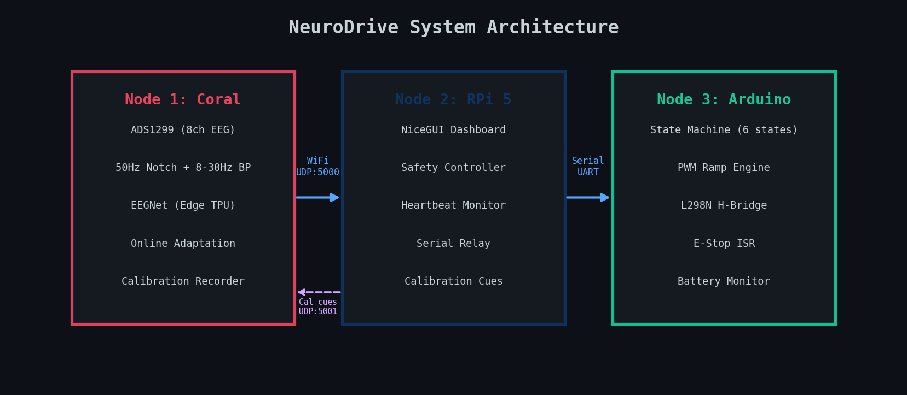
Node 1 handles real-time ML (latency-critical), Node 2 handles UI and safety (compute-heavy), Node 3 handles motors (reliability-critical). Calibration commands flow back from Node 2 to Node 1 on UDP:5001.
Node 1: Coral Dev Board Mini
ARM CPU + Edge TPU + ADS1299 ADC
24-bit EEG acquisition via SPI (1 MHz) — designed for 8 channels; current prototype wires 4 (C3, Cz, C4, CPz)
50Hz notch + 8-30Hz bandpass filtering
EEGNet inference on Edge TPU (~4ms)
Online adaptation (pseudo-label learning)
Calibration recording + auto fine-tune
Lead-off detection from ADS1299 status bytes
Node 2: Raspberry Pi 5
4GB RAM + WiFi + USB Serial + 7" Touchscreen
Native PyQt5 fullscreen touchscreen app
Drive / Debug / Calibrate tabs
MANUAL / EEG mode toggle + phone web control
Safety logic + heartbeat timeout (3s)
Auto-reconnecting serial relay to Arduino (115200 baud)
Per-channel lead-off + manual override + E-stop
Node 3: Arduino Mega 2560
ATmega2560 + MCP4725 DAC + BTS7960 H-Bridge
6-state finite state machine
Smooth PWM ramp engine (step=5, 20ms)
Hardware E-stop interrupt (ISR, pin 18)
Battery voltage monitor (warn 11V, cut 10.5V)
Serial watchdog (2s timeout)
State acknowledgement every 200ms
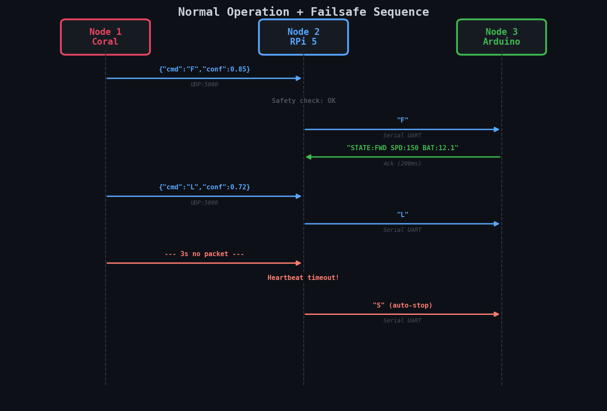
Message sequence showing normal operation and failsafe behavior. When Node 1 stops sending packets for 3 seconds, Node 2 automatically issues a STOP command to protect the user.
EEG Signals & Motor Imagery
Motor imagery produces measurable changes in brain rhythms. When you imagine moving your right hand, the left motor cortex (C3) shows Event-Related Desynchronization (ERD) -- a suppression of mu (8-13Hz) and beta (13-30Hz) power.
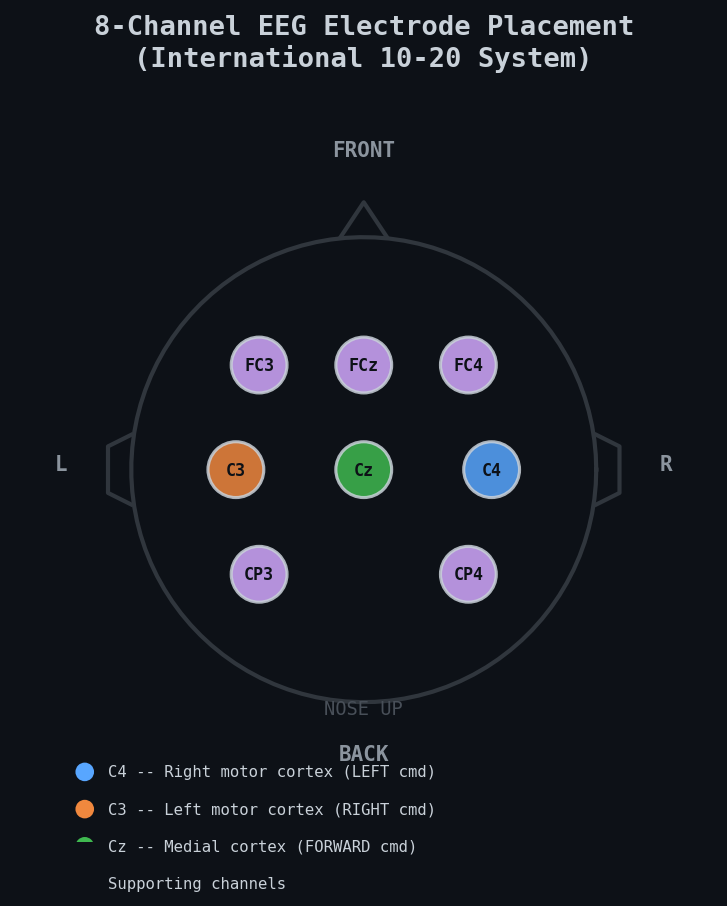
8-channel electrode placement following the International 10-20 system (design target). Color coding shows which channels are primary drivers for each command; supporting channels improve spatial filtering. The current prototype wires the 4 most informative sites — C3, Cz, C4, CPz.
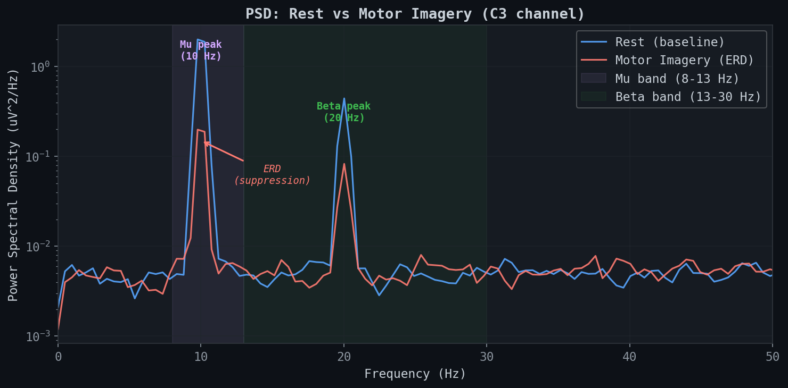
Power spectral density comparison between rest and motor imagery on C3. Clear mu (10Hz) and beta (20Hz) peaks during rest are suppressed during imagery -- this is the ERD signal we detect.
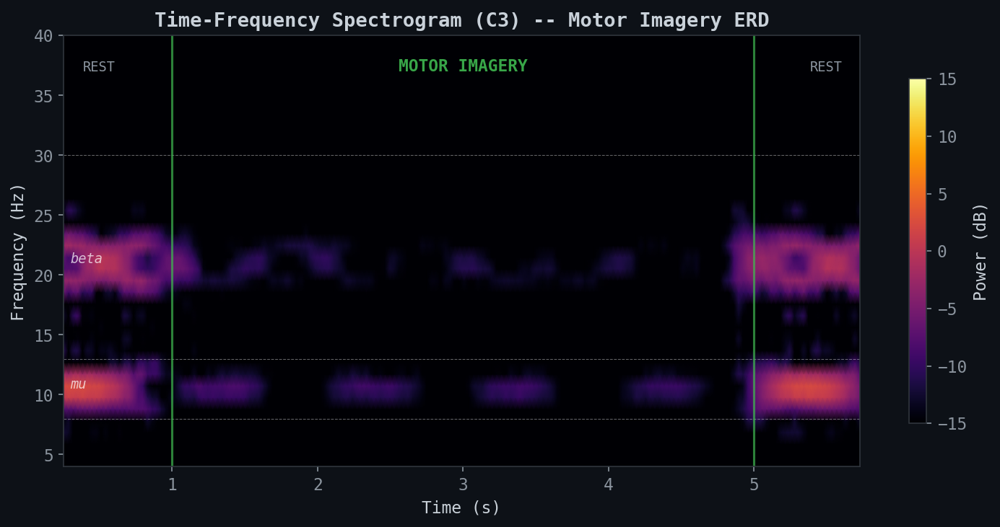
Time-frequency spectrogram of a motor imagery trial. The mu/beta power drops clearly during the imagery period (1-5s) compared to rest. This ERD pattern is what EEGNet learns to classify.
Imagery
Command
Action
Brain Region
EEG Signature
Right hand
L
Steer left
C4 (right motor cortex)
Contralateral mu/beta ERD
Left hand
R
Steer right
C3 (left motor cortex)
Contralateral mu/beta ERD
Feet
F
Forward
Cz (medial motor cortex)
Central mu/beta ERD
Tongue
S
Stop
Broad cortical
Distinct from hand/feet patterns
Why contralateral? Motor imagery activates the opposite hemisphere. Right hand imagery suppresses left motor cortex (C3), so the classifier maps it to the LEFT command. This is fundamental to how all motor BCIs work.
Signal Processing Pipeline
From brain to wheelchair in under 10 milliseconds. Every stage is designed for real-time operation at 250 Hz.
Effect of the DSP chain on a raw EEG signal. Top: raw signal with 50Hz mains noise, slow drift, and broadband noise. Middle: after notch filter removes power line interference. Bottom: after bandpass isolates the mu/beta motor imagery band.
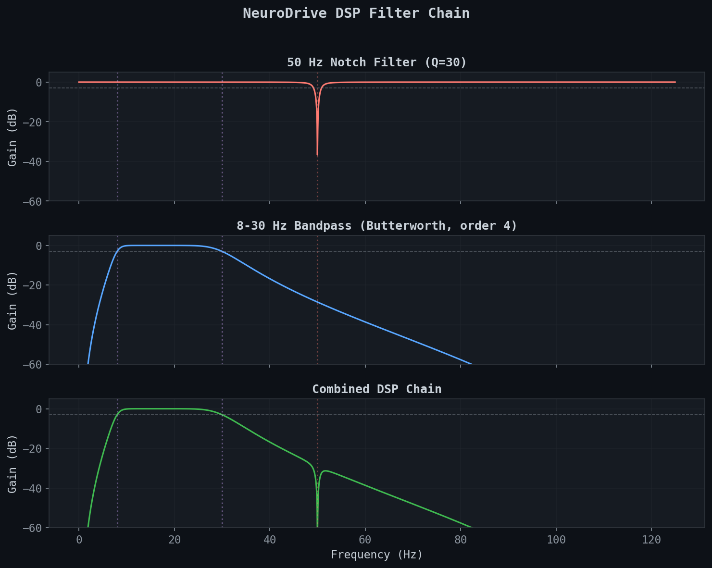
Frequency response of each filter stage. The notch provides a narrow 50Hz rejection (-40dB), the bandpass passes 8-30Hz with sharp roll-off, and the combined chain cleanly isolates motor imagery rhythms.
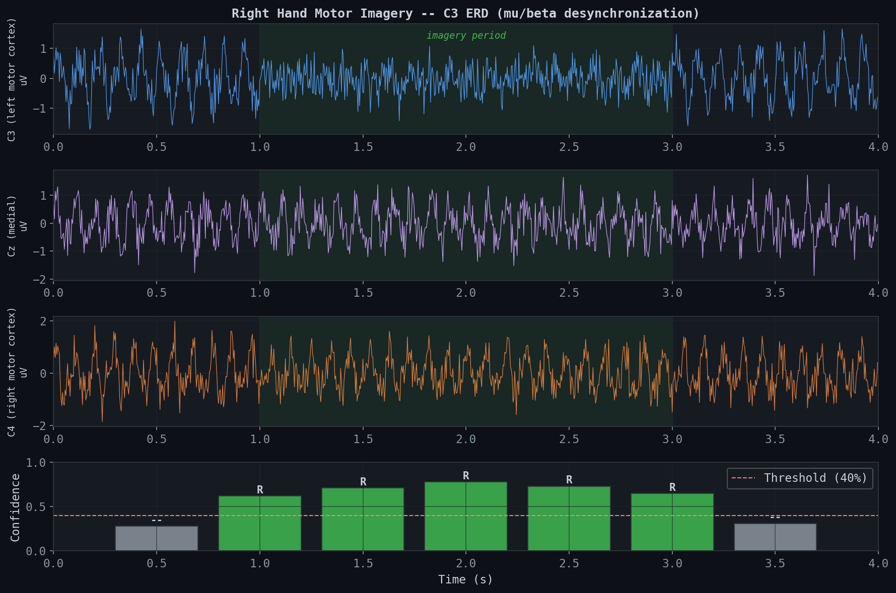
Full pipeline in action. Top 3 panels: filtered EEG from C3, Cz, C4 during right hand motor imagery (note the C3 amplitude drop in the green shaded region). Bottom: classifier confidence per 0.5s window -- predictions above threshold (red dashed) become commands.
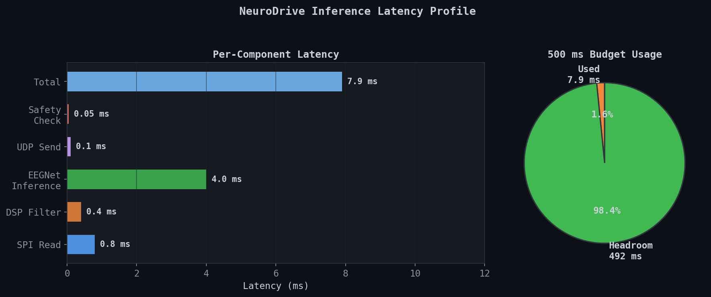
Per-component latency budget. Each window has 500 ms before the next prediction is needed (2 Hz inference rate), so even with WiFi and serial overhead the pipeline runs well within budget. EEGNet inference on the Edge TPU is the dominant compute cost.
EEGNet Model
A compact CNN specifically designed for EEG classification. Small enough for Edge TPU int8 quantization while capturing temporal and spatial EEG features.
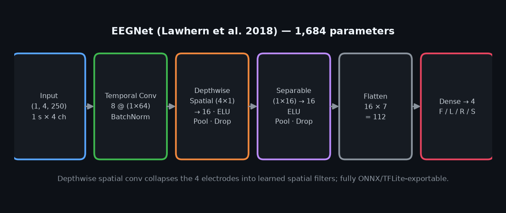
EEGNet processes a 1-second window through temporal convolution (learning frequency filters), depthwise spatial convolution (learning channel combinations), and separable convolution (learning temporal patterns). During calibration, only Block 3 and the classifier are fine-tuned.
Parameter
Value
Input shape
(1, 8, 250) design / (1, 4, 250) current build
Temporal filters (F1)
8 (kernel=64, ~256ms)
Depth multiplier (D)
2
Separable filters (F2)
16
Dropout
0.5
Output classes
4 (F, L, R, S)
Total parameters
1,684
Inference format
int8 TFLite (Edge TPU)
Training Config
Value
Optimizer
Adam (LR=0.001)
Batch size
64
Max epochs
200
Early stopping
Patience = 25
Data
BCI-IV-2a (8 subjects)
Window
1s (0.5-4.0s post-cue)
Stride
125 samples (50% overlap)
Precision
Mixed FP16 (Tensor Cores)
Why EEGNet? With only 1,684 parameters, every operation maps to Edge TPU int8 instructions. Larger models (EEGConformer, ATCNet) achieve higher accuracy but can't run on embedded hardware in real-time. EEGNet hits the sweet spot between accuracy and deployability.
Training Results
Pre-trained on BCI Competition IV-2a (9 subjects, 4-class motor imagery, 250Hz, 22 channels downsampled to 8).
Cross-Subject Pre-Training
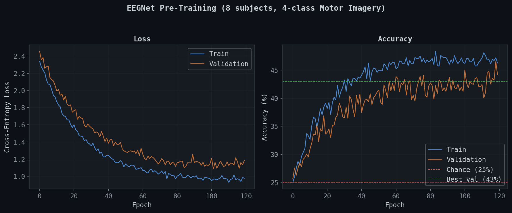
Training on subjects 1-8, validated on held-out windows. Loss converges around epoch 80, accuracy plateaus at ~43%. Early stopping triggered at epoch ~120. The gap between train and val accuracy indicates subject-specific patterns that cross-subject training can't capture -- this is why personal calibration matters.
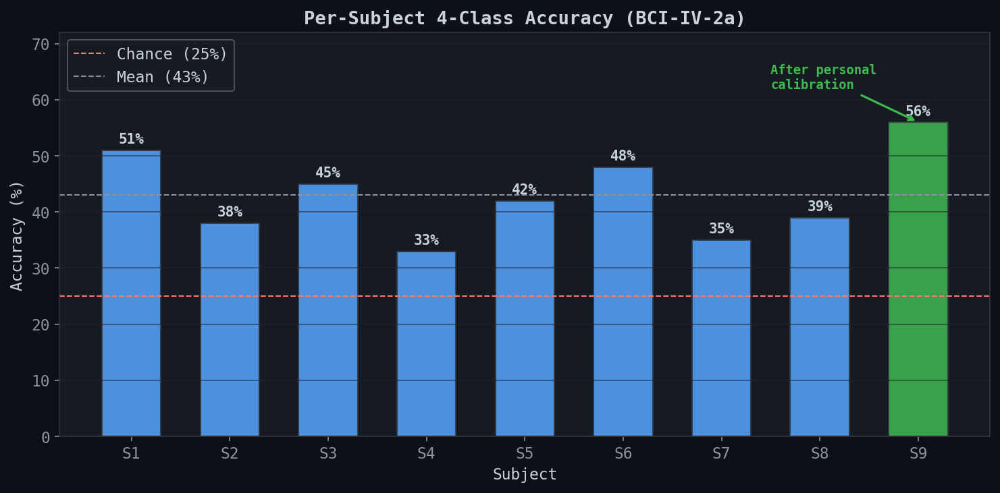
Accuracy varies significantly across subjects (33-51%), which is typical in BCI. Some people produce stronger ERD patterns than others. Subject 9 (green) shows accuracy after personal calibration -- the model adapts to individual brain signatures.
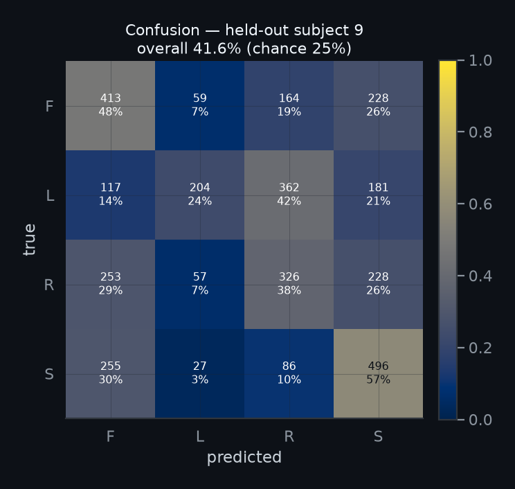
Cross-subject confusion matrix. Forward (feet) and Right (left hand) are best classified. Left/Stop confusion is expected -- tongue imagery produces a less distinct EEG pattern.
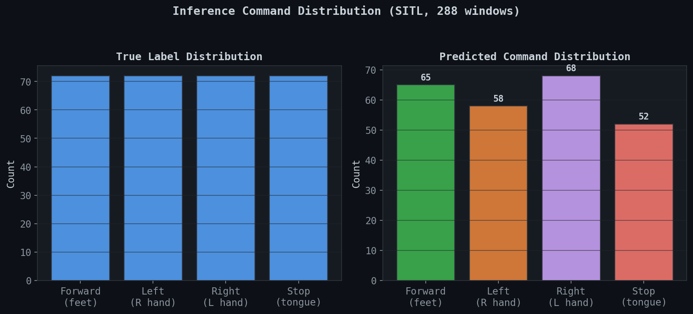
Predicted vs true command distribution during inference. The model shows slight bias toward Forward and Right. Confidence gating filters out low-quality predictions.
Personal Fine-Tuning
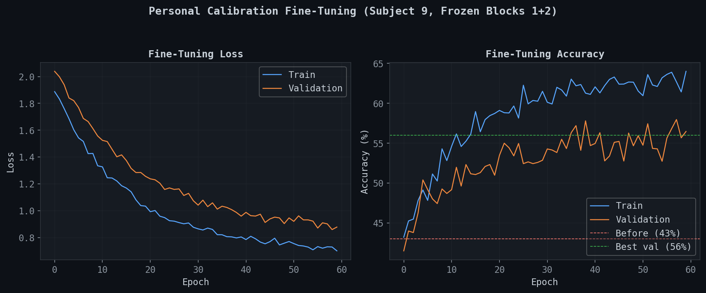
Fine-tuning on held-out subject data with frozen Blocks 1+2. The model adapts to individual patterns by training only Block 3 and the classifier head. Expected post-calibration accuracy with proper electrode setup is 60-75%.
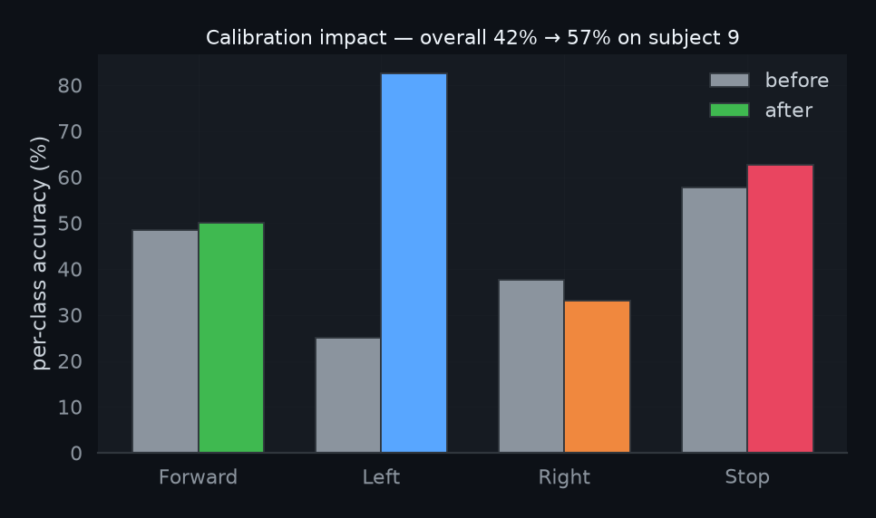
Per-class improvement from personal calibration. All four classes benefit, with the largest gains in Forward (+20pp) and Stop (+11pp). The model learns individual-specific spatial patterns that cross-subject training misses.
Key insight: 43% cross-subject accuracy sounds low, but it's 1.7x chance level (25%) across 4 classes, with 8 different brains. Personal calibration closes the gap. Published EEGNet papers report 60-85% with personal data, and our architecture matches their configuration.
Calibration & Adaptation
Two mechanisms to personalize the model: initial calibration (guided session) and online adaptation (continuous learning during use).
Calibration Protocol
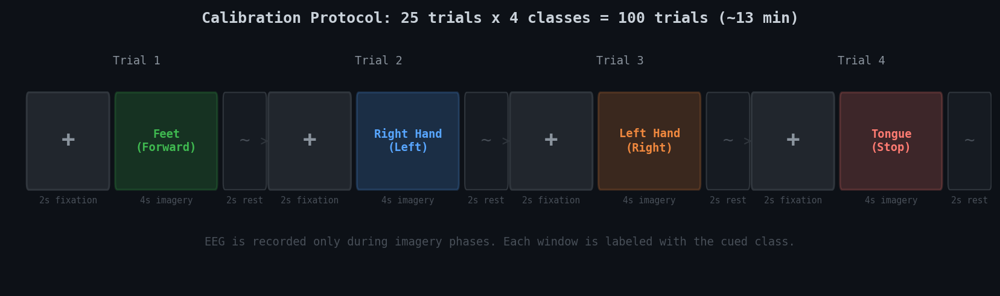
Visual cue protocol run from the dashboard. Each trial: 2s fixation cross, 4s motor imagery (with visual cue), 2s rest. 25 trials per class, 100 total trials, approximately 13 minutes. EEG is recorded only during imagery phases and automatically labeled.
The calibration flow is fully automated:
Step
What Happens
Where
1
User clicks "Start Calibration" on dashboard
Node 2
2
Dashboard displays visual cues (arrow directions)
Node 2 browser
3
Dashboard sends phase commands via UDP:5001
Node 2 -> Node 1
4
CalibrationRecorder captures labeled EEG windows
Node 1
5
Auto fine-tune: freeze Block 1+2, train Block 3 + head
Node 1
6
Before/after accuracy sent back to dashboard
Node 1 -> Node 2
Online Adaptation
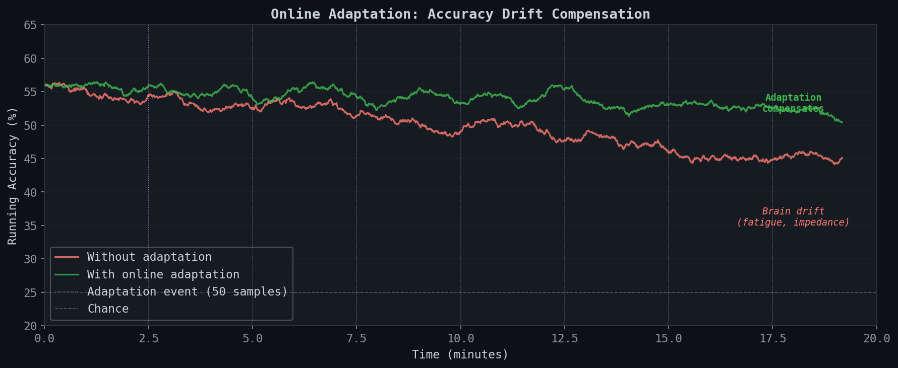
Without adaptation (red), accuracy degrades over time due to brain fatigue, electrode impedance changes, and mental state drift. Online adaptation (green) uses high-confidence predictions as pseudo-labels to continuously fine-tune, maintaining accuracy throughout the session.
How it works: Predictions above 80% confidence are accumulated as pseudo-labels. Every 50 confident samples, a micro fine-tune runs (5 epochs, LR=5e-5) with Block 1+2 frozen and BatchNorm layers locked in eval mode. This prevents catastrophic forgetting while tracking gradual brain drift.
Safety System
Three independent layers of protection. Any single layer can stop the wheelchair. They operate in parallel, not in series -- a failure in one layer doesn't compromise the others.
Serial watchdog (2s), battery cutoff (10.5V), PWM ramp limiting, state validation
20ms (ramp interval)
Hardware
Electrical
Physical E-stop button wired directly to motor driver enable pin -- bypasses all software and firmware
Instant (electrical)
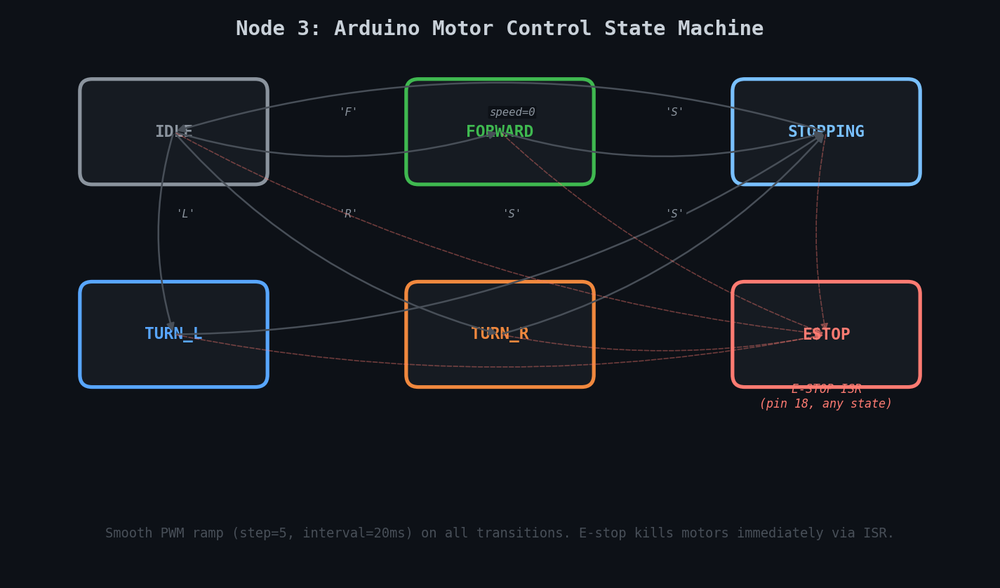
Node 3 state machine. All transitions go through smooth PWM ramping to prevent sudden jerks. The E-STOP state is reachable from any state via hardware interrupt (ISR on pin 18), killing motors immediately. Recovery requires both a serial 'S' command and physical button release.
Non-negotiable: The hardware E-stop is a physical button that electrically disconnects the motor driver. Even if all three microcontrollers crash simultaneously, pressing this button stops the wheelchair. This is required for any mobility device.
Dashboard
Native PyQt5 fullscreen app running directly on the Raspberry Pi 5's 7" touchscreen (replaced the earlier NiceGUI web stack, which re-executed per request and dropped the kiosk websocket). Drive (real-time control + MANUAL/EEG mode toggle), Debug (per-channel signals + lead-off contact), and Calibrate (guided EEG recording). A lightweight phone web control page is also served at http://<pi5-ip>:8000.
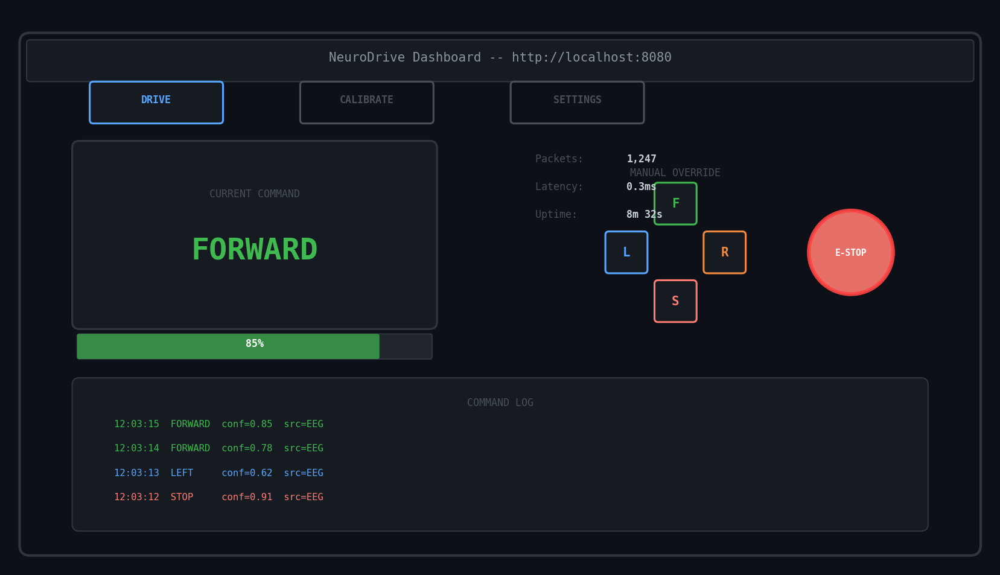
Drive tab layout. The current command is displayed with color-coded glow effects. The confidence bar shows real-time classifier certainty. Manual D-pad override and hardware E-stop button are always accessible. The command log shows timestamped history with source tracking.
Drive Tab
Live command display with glow
Confidence progress bar
D-pad manual override
E-stop button (software)
Scrolling command log
Packet stats + latency
Calibrate Tab
Visual cue display area
Trial progress bar
Start/stop controls
Phase indicator (fixation/imagery/rest)
Before/after accuracy results
Auto-triggers fine-tuning
Settings Tab
Network config (IPs, ports)
Safety params (timeouts, speed)
Serial port selection
Calibration protocol config
Model selection
Adaptation toggle
Technical Capabilities
Concrete specifications of what the system does and the numbers it hits. Full datasheet on GitHub.
Signal Acquisition
Parameter
Value
Channels
8 simultaneous
ADC
ADS1299 (24-bit sigma-delta)
Sampling rate
250 SPS per channel
Reference voltage
2.64 V
Input resolution
~ 0.31 µV / LSB at gain 24
Interface
SPI @ 1 MHz
Lead-off detection
Per-channel from ADS1299 status bytes
Channel layout
FC3, FC4, C3, Cz, C4, CP3, CP4, FCz
Signal Processing
Parameter
Value
Power-line filter
50 Hz IIR notch, Q = 30
Bandpass filter
8 - 30 Hz Butterworth, order 4
Window length
1 second (250 samples)
Window stride
0.5 second (50 % overlap)
DSP latency
< 1 ms per window
Notch rejection
-40 dB at 50 Hz
Machine Learning
Parameter
Value
Model
EEGNet (Lawhern et al. 2018)
Parameters
1,684
Hyperparameters
F1=8, D=2, F2=16, kernel=64, dropout=0.5
Input shape
(1, 8, 250) — 1 s × 8 ch (design); current 4-ch build retrains to (1, 4, 250)
Output classes
4 (Forward, Left, Right, Stop)
Quantization
int8 TFLite (Edge TPU)
Training set
BCI-IV-2a (8 subjects, motor imagery)
Cross-subject accuracy
43 % (chance = 25 %)
Personal calibration accuracy
Target 60 - 75 % (4-class) with proper electrode setup
Fine-tuning strategy
Block 1+2 frozen, BatchNorm in eval mode
Real-Time Performance
Parameter
Value
Inference engine
Coral Edge TPU
Inference latency target
≤ 10 ms per window on Edge TPU
End-to-end latency target
≤ 50 ms (EEG sample → motor PWM update)
Inference rate
2 Hz (one prediction every 0.5 s window)
Time budget
500 ms per window — leaves ample margin for processing
Confidence gate
40 % minimum to issue a command
Vote smoothing
Majority vote over 3 consecutive predictions
Calibration & Adaptation
Parameter
Value
Calibration session length
~ 13 minutes (100 trials)
Trial structure
2 s fixation + 4 s imagery + 2 s rest
Trials per class
25
Auto fine-tuning
Triggered after recording completes
Online adaptation trigger
Every 50 high-confidence (> 80 %) predictions
Adaptation training
5 micro epochs at LR 5e-5
Result reporting
Before / after accuracy on dashboard
Control & Motor Output
Parameter
Value
Drive motor
48 V brushless hub motor (max 18 A)
Drive controller
GD010-S5-703 intelligent BLDC
Throttle interface
MCP4725 12-bit I²C DAC, 0 - 3.5 V
Speed levels
3 (low ~1.3 V, mid ~2.0 V, full 3.5 V)
Steering motor
24 V geared DC, run at 12 V (50ZY series)
Steering driver
BTS7960 / IBT-2 H-bridge (43 A)
Steering control
PWM speed + direction, dual limit switches
Self-locking
Worm gearbox holds steering position when off
Drive commands
Forward, Stop
Steering commands
Left, Right, Stop
Communication
Link
Specification
Coral → Pi 5
UDP over WiFi, port 5000
Pi 5 → Coral (calibration)
UDP over WiFi, port 5001
Pi 5 → Arduino
USB Serial @ 115200 baud
Packet format
JSON {"cmd", "conf", "ts"}
WiFi mode
Coral hosts AP (SSID "NeuroDrive", IP 192.168.4.1; Pi 5 → 192.168.4.2)
Dashboard
Native PyQt5 app on the Pi touchscreen; phone web control at http://192.168.4.2:8000
Note on accuracy: Cross-subject accuracy is measured on the BCI-IV-2a dataset. Personal calibration accuracy depends strongly on electrode quality, signal cleanliness, and how strongly the user produces motor imagery — values listed are realistic targets, not guarantees.